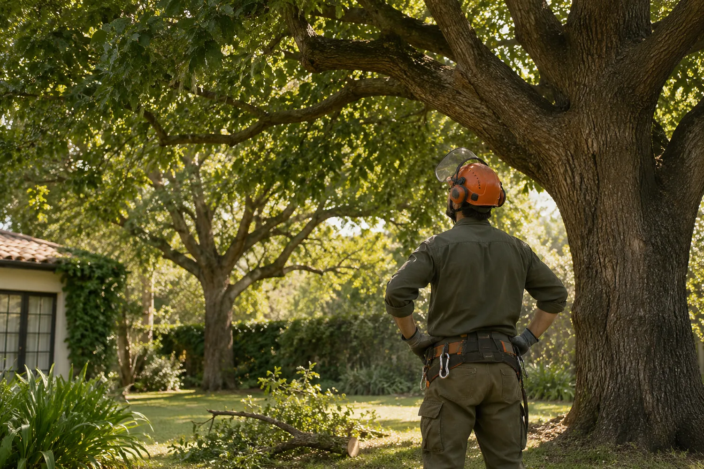
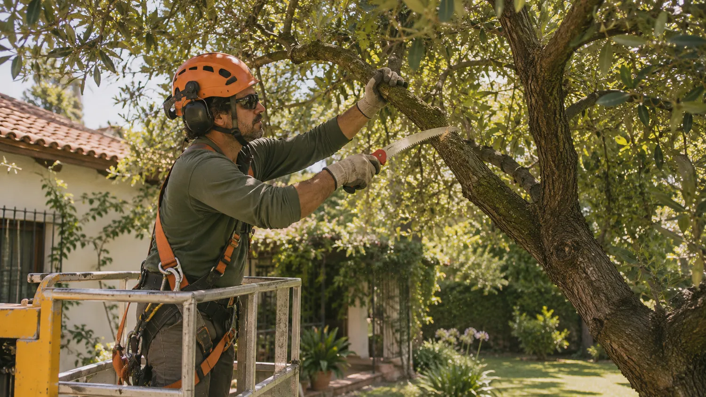
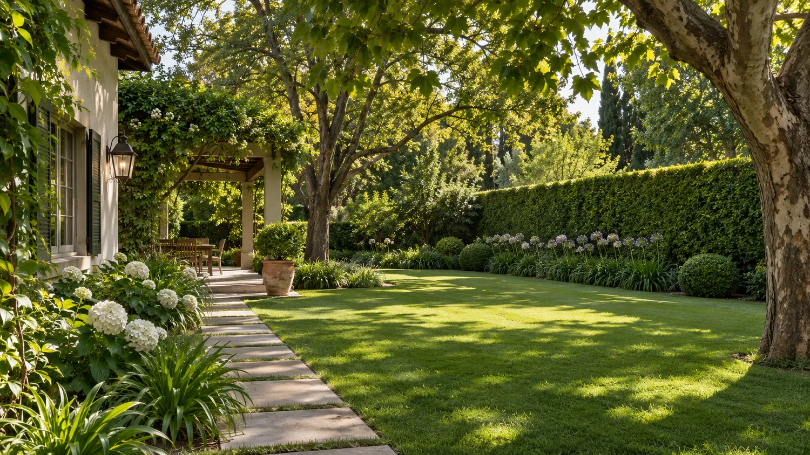

Copas y ramas
Poda de árboles
Para ramas secas, copas muy densas o ramas que se acercaron al techo. Revisamos el árbol y el espacio antes de proponer el corte.
Consultar por podaPoda y cuidado de árboles
Poda, retiro de árboles y mantenimiento de cercos para patios, jardines y espacios comunes.
Pedí un presupuesto
Servicios
Contanos qué querés resolver. El tipo de árbol, el acceso y lo que hay alrededor ayudan a definir el trabajo.
Copas y ramas
Para ramas secas, copas muy densas o ramas que se acercaron al techo. Revisamos el árbol y el espacio antes de proponer el corte.
Consultar por podaÁrboles comprometidos
Si un árbol está seco, inclinado o dañado, evaluamos si corresponde retirarlo y qué acceso hace falta para el trabajo.
Consultar por retiroPatios y jardines
Recorte de cercos y arbustos para recuperar forma, despejar entradas y mantener libres los pasos.
Consultar por cercos
Cada árbol es distinto
Una rama sobre el techo, un árbol que perdió fuerza o un cerco que creció demasiado necesitan soluciones diferentes. Miramos el entorno y definimos el trabajo según cada caso.
Espacios que se disfrutan
Desde un patio hasta un espacio compartido, cada jardín tiene su forma. Estas imágenes muestran algunas posibilidades.

Un espacio más despejado
Podemos ayudarte a despejar ramas, recuperar la forma de los cercos y preparar el espacio para volver a usarlo.
Consultar por mi espacioCómo trabajamos
Pasá el barrio, una descripción breve y, si podés, fotos del árbol y lo que lo rodea.
Vemos el tamaño, los accesos y la cercanía a techos o cables. Si hace falta, coordinamos una visita.
Definimos el alcance y si querés incluir el retiro de ramas antes de coordinar una fecha.
Preguntas frecuentes
Las fotos sirven para una primera evaluación. Si el tamaño o los accesos no se ven con claridad, puede hacer falta una visita.
Se acuerda antes del trabajo. Avisanos en la consulta si necesitás incluirlo.
Indicá si está en la vía pública. Según el municipio, puede corresponder avisar o pedir autorización antes de intervenir.
Presupuesto
Elegí el servicio y agregá el barrio. Podés adjuntar las fotos después, en WhatsApp.
Escribinos por WhatsApp y contanos qué necesitás. Podés enviarnos fotos y tu localidad.
Escribinos por WhatsAppEl teléfono de este enlace de demostración no es válido.
Ir directo a WhatsApp